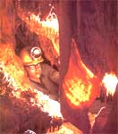

Issue # 87 - May/June 1984
Like Tom Sawyer, many of us feel the urge to enter and to explore those treasures that Nature and Time have carved deep into the earth. Of course, exploring wild (that is, noncommercial) caves is not a sport to be taken on lightly, but-with the proper awareness of the dangers involved-caving can be a safe and exhilarating hobby. There are few experiences that can match the thrill of following a dark, narrow passageway into the earth and finding yourself in a vast underground chamber decorated with crystals of calcite and gyp- sum, its floor and ceiling studded with stalagmites and stalactites. Many of the folks who initially make a trip into a cave just to "see what it looks like" soon find themselves immersed in a lifelong avocation. For in addition to its appeal as a demanding, strenuous sport, caving offers unique opportunities for photography, mapping, and geological and biological studies.
GETTING STARTED
You won't need to invest great sums of money to launch yourself into the sport of caving ($50 to $150 will cover all the equipment you could possibly need as a neophyte caver), but you will need to invest some time in learning about your new sport.
Before you purchase any equipment, in fact, you should tour a commercial cave to get a glimpse of the underground world. Because they're protected from unauthorized explorers, these caverns are generally well cared for, and some of them have breathtaking vistas and contain abundant cave formations. A guided tour will give you an opportunity to get an initial glimpse of some of the wonders that lie beneath our feet. (Obviously, anyone who has a tendency toward claustrophobia or an abnormal uneasiness about being in the dark is not a good candidate for caving!) If after this first taste you're still interested in underground exploring, you'll next want to get in touch with some experienced cavers by joining the National Speleological Society (NSS).
An affiate of the American Association for the Advancement of Science, the NSS is dedicated to the exploration, study, and conservation of caves. With more than 5,700 members, the society maintains over 200 local chapters (known as grottos) across the U.S. (To locate the grotto nearest you or to get more information about the society, write the NSS at the address given in the sidebar.) You need not be an experienced caver to join: Your interest in the subterranean world and your desire to protect it from man's destructive activities are the only prerequisites.
There are numerous advantages to be gained from joining the NSS, so even if you generally shy away from organized approaches to recreation, you'll probably want to become a member. Above all, caving is not a solo sport, and membership in the NSS will put you in touch with local enthusiasts. The vast majority of experienced spelunkers belong to the society, and joining is the best way for the beginner to learn about the sport. Furthermore, in addition to the monthly meetings, training programs, and trips offered by the local chapters, the society holds regional conventions and an annual summer gathering that includes scientific and practical caving sessions, field trips, photography displays, and caving proficiency contests. The NSS also publishes the NSSNews (which features articles, reviews books, provides information on caving events, and lists names and addresses of equipment suppliers) and the NSS Bulletin (a quarterly journal that reports on original speleological research). Your $20 membership fee buys a year's subscription to both publications and helps support such NSS projects as the National Cave Rescue Commission and various conservation activities.
Besides keeping you informed on happenings in the caving community and providing you with instruction about techniques, equipment, safety, and conservation, your membership in the NSS will literally open doors-or rather gates-for you. The entrances to many caves are closed to protect the fragile environments within from vandalism, and those gates are opened only to NSS members who, having been properly educated, can be trusted to preserve our underground wilderness. Likewise, the locations of some hard-to-find caves, as well as maps of the passages, are distributed only to NSS members, through the local grottos.
CAVE CONSERVATION
There is good reason to keep the location of unspoiled caves secret. In some well-traveled caverns today, you'll find passages where nothing but stumps remain of the once beautiful formations . . . and where nature's treasures have been replaced by beer cans or defiled by graffiti. Such defacement is inexcusable. Caves are-as mentioned above-extremely fragile environments: Formations that may have taken thousands of years to form can be destroyed in seconds by an unappreciative visitor. The NSS also stresses that, in addition to their recreational value, caves have significant scientific and scenic worth. Once gone, this wealth cannot be recovered. Therefore, the society is devoted to the protection of the underground wilderness and considers cave conservation and safety its top priorities. Spelunkers are taught to leave the cave as they find it, carrying out all of their trash (and that of less conservation-minded visitors, as well) . . . limiting necessary markings to a few small and removable signs . . . and exercising extreme caution not to accidentally break or soil speleothems (the touch of a muddy hand, for instance, may permanently marla formation or disturb life-forms.) All biological and mineral materials-even if broken off-should be left as is for scientific study: The collecting of speleothems for display purposes is never justified. In other words, spelunkers are asked to "cave softly" by adhering to the conservation slogan "Take nothing but pictures. Leave nothing but footprints. Kill nothing but time."
BASIC EQUIPMENT
Beginning cave exploring requires only a few pieces of specialized gear. For your first outings, you'll probably want to borrow any equipment you don't already have. Later, after you've had time to investigate the various options, you can more wisely select your own gear.
The most essential piece of equipment that you'll need right from the start is a strong, healthy body. If you're not in top physical shape already, you should strengthen your legs, back, and lungs with some aboveground hiking before you venture below.
Next, you'll need some warm-but not bulky-old clothing. It's best to dress in layers so that you can shed or add insulation as needed and to avoid garments with unnecessary pockets or loops that could snag in tight passages (many cavers don a pair of coveralls as their outermost layer). Wool clothing is preferable to cotton, especially for undergarments . . . and although denim jeans are often worn by novices, a pair of wool trousers will allow you more flexibility and keep you warmer. Because caves are generally damp and cool (temperatures may range from the 50's to the 70's), the danger of hypothermia is very real.
Protective, comfortable footgear is also a must. Cave floors are slick, so you'll need skidresistant soles. You might also want to invest in a pair of knee pads, as that part of your body will most certainly be subjected to a great deal of wear and tear. Rather than having continuous walking passages, most caves have fissures and crevices, crawlways, pits, waterfalls, and lively streams. The spelunker must be prepared to crawl over sharp rocks, slither on all fours through mud, and climb.
For headgear you'll need a helmet designed specifically for caving. It must be fitted with brackets for mounting a head lamp and should have a nonelastic strap. Contrary to what some caving neophytes assume, the helmet is worn chiefly to cushion your head from bumps against the low ceilings rather than to guard you from falling rock. Caves tend to be stable topographical features and have little rockfall.
A reliable source of illumination is vital, of course. There's no place darker than a cave! In choosing this item, you can opt for either an electric or a carbide lamp. Carbide lights-the traditional caving lanterns-work by mixing carbide and water together to give off acetylene gas. The lamp is lit with a striker, and the bright flame bounces off a parabolic reflector that's built into the lantern. Since carbide lamps generally last two to four hours for each filling, a caver must carry a waterproof container of extra carbide and-if it isn't available in the cave-a separate vessel of water, as well as a repair kit. In addition to providing illumination, the open flame of the carbide lamp comes in handy for cooking or for providing warmth. On the other hand, the flames can damage ropes if proper precautions aren't taken, and they're easily blown out in windy passages.
For these reasons, electric lamps are gaining popularity among cavers. These are mounted on a helmet and attached by a cord to a belt worn battery pack. Electric lanterns are less finicky than carbide lamps, but they're also more expensive, and the spare batteries are bulkier and heavier than carbide. Whichever type of lamp you choose, though, be sure to pack out all of your spent fuel: Batteries and carbide can be lethal to cave life. In addition, you'll need to carry two backup light sources. The most commonly used secondary sources are waterproof, shockproof flashlights and a candle stub and matches. Chemical light sticks that will deliver up to ten hours of low intensity illumination are also available.
You should take along a basic first aid kit, a compass (with pencil and paper), drinking water (unless you're sure of the purity of that in the cave), and high-energy nibble food, such as hard candies or the familiar camper's "gorp". On longer outings, a change of clothes is often welcome at the end of the trip. Fluorescent flagging tape is also good to have on hand (it's available from caving suppliers . . . see the accompanying sidebar), but be certain to remove the tape as you exit the cave. Never mark your passage with unsightly chalk, crayon, or burn marks: Such thoughtless graffiti may last for centuries.
If you really get hooked on caving and decide to pursue the sport on a more advanced level, you'll need other specially designed caving equipment. Techniques for advanced caving include vertical caving (or subterranean rock climbing), cave scuba diving, and underground camping.
CAVE COURTESY AND SAFETY
Unless the cave you're exploring happens to be on your own property, you'll need to obtain the landowner's permission before entering the opening. Repay that kindness by treating the cave with respect and informing the owner when you leave. Keep in mind that you have been extended a favor by being allowed to cross his or her land and explore beneath it. The actions of a single inconsiderate spelunker could result in denied access for all other cavers (unfortunately, this has happened). Even if the owner is Uncle Sam, you must follow the same rules: In fact, many caves, especially those in the western states, are located on government land, so you'll need to obtain permission sometimes by writing weeks in advance-before entering them.
Like any other strenuous outdoor sport, caving poses certain dangers, but a properly equipped and trained caver rarely suffers more than a bruise. The caving accidents that end in tragedy are usually the result of someone's ignoring basic rules of cave safety. A few of these guidelines are listed below:
[1] Never cave alone.This is the most important rule of caving safety. What would be a relatively minor occurrence in a group situation (such as a sprained ankle) could be fatal for the solo caver. Four is the recommended number of people for any caving outing, and at least two of the group should be experienced cavers and should take up the lead and tail positions.
[2] Let someone know where you are and how long you'll be gone. Be sure to leave word of the location of the cave and when you expect to return. (In some cases, this information might be given to the landowner from whom you obtained permission to enter the cave.) Give yourself some leeway in exit time, and then stick to your schedule by regularly checking your watch. It's incredibly easy to lose track of time underground. And don't forget to notify the same person when you come out!
[3] Carry at least three sources of light.
[4] Take along adequate food and water. Caving is strenuous work. Always eat a hot, easily digested meal an hour before entering the cave and replenish your energy and water losses frequently during the trip.
[5] Never light a campfire underground. In addition to permanently disfiguring the fragile cave formations with smoke, underground fires may ignite bat guano or contaminate the air with carbon monoxide gas. If you need a source of heat, bring along a lightweight backpacking stove.
[6] Never explore mines. Unlike caves, which are natural formations that have withstood earth movement for thousands of years, mines-which are much "younger"-can be extremely unstable and may even contain pockets of noxious gas.
[7]Check the weather before heading underground. Some low-lying caves with active streams are subject to flooding. Don't go into such caverns if the sky is threatening or if there's been recent rainfall or snowmelt.
[8]Don't trust old ropes or ladders. In the humid environment of a cave, decay occurs quickly. Therefore, any equipment you find inside one is likely to be rotten.
[9] Don't exceed your level of experience. As with other sports, a caving team is only as strong as its weakest member. Plan your trip accordingly, and turn back if one of the group doesn't feel up to par.
[10] Use your head! The guidelines for caving safety are simply matters of caution and common sense.
WHAT YOU'LL FIND
What you'll see when you enter the earth will vary with the type of cave you're in and the characteristics of your region of the country. Nearly 95% of the world's caverns are "solution caves", which are hollowed out of limestone or a few other types of rock by the action of weakly acidic rainwater. Over time, as the water seeks the lowest point, the water table drops, leaving the resulting chambers.
Formations in limestone caves are deposits built up by calcium carbonate, which leaches downward out of the rock layer above the cave. Stalactites may form from the ceiling, while directly below them stalagmites grow from the ground. In time, these formations may join together into columns.
Other common solution-cave speleothems include flowstone (formed by water dripping down a sloping wall), bacon (thin sheets of banded flowstone on the walls or ceiling), rimstone pools, helictites (tiny shoots of calcite growing in all directions), soda straws (extremely fragile hollow stalactite tubes), moonmilk (an unusual free-form deposit), anthodites (quill-like flowers of aragonite or calcite), and gypsum flowers and needles.
Nonsolution caves include glacier caves (created by streamflow and evaporation), lava tubes (formed when surface lava cools faster than interior lava, they often have beautiful ice formations), sea caves (formed by the erosive action of sea waves), and boulder or talus caves (voids in blocks of rock at the base of cliffs) . . . as well as various "near caves" such as shallow sandstone shelters.
The number of caves in the United States is not known, but the NSS estimates that there are more than 50,000 limestone caverns alone. Although the majority of these are located in the eastern and central sections of the country, underground wilderness exists in every region.
Just as there is no single type of cave, there's also no such thing as a "typical" cave. However, it's certain that most are a far cry from their popular image as vast, dramatic caverns. Instead, they're predominantly small, low-ceilinged, wet, and muddy. And though each one reveals a unique view of the underground wilderness, all caves do share some characteristics.
Darkness is the most obvious trait, of course. Whereas our eyes are capable of at least limited sight even on the darkest night (allowing us to discern, for example, the outline of a hand), in the total darkness of a cave we are completely blind. In addition, caves are wet, containing active streams, pools, or at least dripping water. They're quite humid, too, with the air at or near its saturation point. And finally, these voids below our familiar living world are quiet.
All of these traits contribute to the attraction that caves hold for scientists, photographers, and spelunkers. The secrets of the harsh, dark, silent world beneath us are just beginning to be understood, and there's ample opportunity for interested cavers to help with the mapping, studying, and preserving of this fragile wilderness. Even if you aren't interested in pursuing caving as a sport, you owe it to yourself to visit one of the numerous commercial caves and make at least one venture into the earth to see the marvels hidden within.
|
 |
|
|